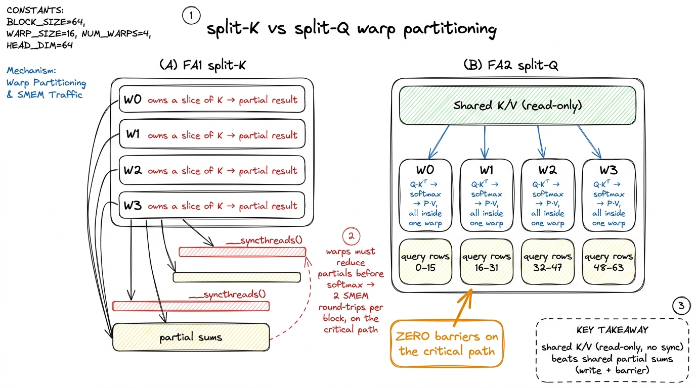
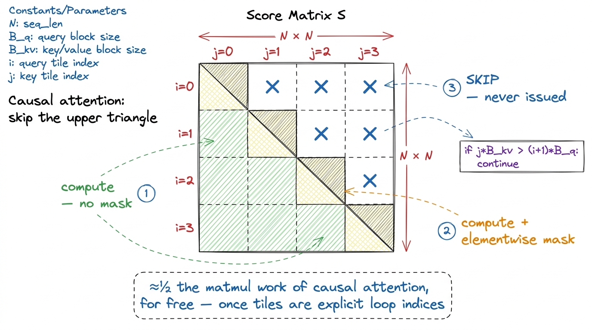
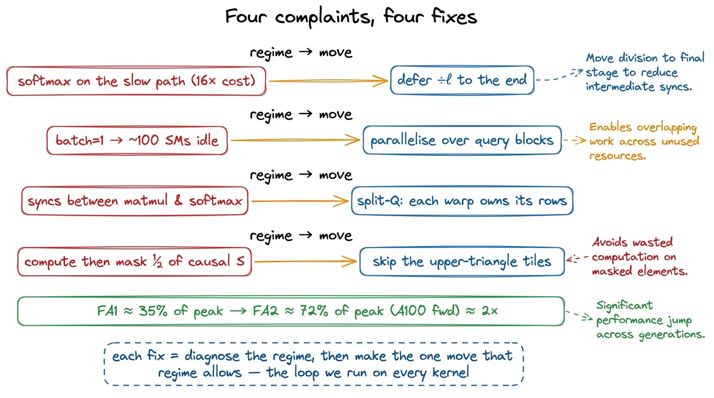

FlashAttention II: better work partitioning FA2
Before we can talk about FlashAttention-2, we have to agree on what problem attention even is, and why it was a memory problem before it was a speed problem. So let me start from the floor.
Attention takes three matrices — the queries Q, the keys K, and the values V. Each is shaped (N × d), where N is the sequence length (how many tokens) and d is the head dimension (something like 64 or 128). The math is short to write down. You compute a score matrix S = Q·Kᵀ, which is (N × N); you softmax each row of S to get probabilities P, also (N × N); and you multiply O = P·V to get the output (N × d). Two matmuls with a softmax in the middle. That's the whole thing.
Now look at that middle matrix. P is (N × N). If your sequence is 8,192 tokens long, N × N is 67 million numbers per head, per layer. In BF16 that's 134 MB. A modern model has dozens of heads and dozens of layers, and you were about to write every one of those N × N matrices out to HBM — the GPU's main high-bandwidth memory — and then read it back to do the softmax, and read it back again to do the second matmul. The compute is O(N²). But the memory traffic is also O(N²), and on a GPU, memory traffic is usually what kills you.
That is the problem the first FlashAttention solved. The question this article answers is the one after that: once you've solved the memory problem, why is the kernel still leaving half its speed on the floor — and how does FlashAttention-2 get it back?
A one-paragraph recap of what FlashAttention-1 already won
The core trick of the original FlashAttention is that you never build the full N × N score matrix at all. You cut Q, K, and V into blocks. You bring a block of queries and a block of keys into fast on-chip memory — SRAM, the little scratchpad that lives right next to the compute units — multiply them into a small tile of scores, and immediately consume that tile. The clever part is the online softmax: instead of needing the whole row of S to normalize, you keep a running maximum and a running sum for each query row, and you patch up the answer incrementally as each new key block streams past. The N × N matrix is born and dies inside SRAM. It never touches HBM.
The result was a kernel whose memory traffic is O(N) instead of O(N²), and it was a genuine landmark. [[cross-link to the three-regimes article for the memory-vs-compute framing.]] So when I first read the FlashAttention-2 paper, my honest reaction was: what's left to win? The IO problem is solved. The matrix never leaves the chip. Where does another 2× come from?
The answer is a lesson I keep relearning, and it's the spine of this whole article: being IO-optimal is not the same as being fast. FlashAttention-1 fixed where the bytes live. FlashAttention-2 fixed how the work is partitioned — across instructions, across the sequence, and across the warps inside a block. Closing that second gap is worth roughly 2× over FA1 on an A100, taking the forward pass from around 35% of the hardware's theoretical peak into the neighborhood of 72%.1 The FA2 paper (Dao, 2023) reports ~2× over FA1 and up to ~72% of theoretical max FLOP/s on A100 forward. On H100 the later WGMMA/TMA kernels push higher still, but the structural wins we cover here — deferred normalization, sequence-length parallelism, warp partitioning, causal skipping — are the ones that land before you reach for any Hopper-specific instruction. They're portable ideas, not hardware tricks.
 figure rendering · The mental model for the whole article: FA1 won the memory argument; F
figure rendering · The mental model for the whole article: FA1 won the memory argument; FHold onto that right-hand panel. Those three boxes — fewer slow ops, fill every SM, fewer barriers — are the three changes we're about to derive. Plus a fourth freebie that falls out of the second. Let's take them one at a time, and let's make sure each one comes from a profiler complaint, not from thin air.
Why an IO-optimal kernel can still be slow
Here's the question I want to sit with, because everything hinges on it. If FlashAttention-1 already stopped moving bytes to and from HBM, and the GPU's compute units are busy doing matmuls, what is there left to be slow?
The trap is a belief that sounds obviously true but isn't: that all FLOPs cost the same. They don't. Not remotely.
Let's do the napkin math out loud. An A100's tensor cores — the special-purpose matrix-multiply hardware — do about 312 TFLOP/s of matmul in BF16. But the same chip, running ordinary elementwise and reduction math on its general-purpose CUDA cores, does only about 19.5 TFLOP/s. Divide those: 312 / 19.5 ≈ 16. A matmul FLOP and an exp FLOP run on different silicon, and the general-purpose silicon is about 16× slower per FLOP.2 On H100 the same gap is even wider in absolute terms — roughly 989 TFLOP/s BF16 tensor-core vs a much smaller non-tensor rate — but the ~16× ratio is the number to carry in your head. The exact multiplier drifts by generation and dtype; the order of magnitude is the durable fact.
Now, which parts of attention run on which silicon? The two matmuls — Q·Kᵀ and P·V — run on the fast tensor cores. But the softmax in the middle — the row-max, the exp, the rescale, the row-sum — every one of those is elementwise or reduction work. It runs on the slow path.
Here's the part that surprised me the first time, so let me stop and make it surprising for you too. In a transformer, the non-matmul operations are a rounding error by FLOP count. Horace He measured this in BERT: normalization and pointwise ops are about 0.2% of the total FLOPs. Two tenths of one percent. And yet those same ops achieve 250× and 700× lower throughput than the matmuls, because they're memory-bandwidth bound and stuck on the slow path. A thing that is 0.2% of your work can eat the majority of your wall-clock time.3 This is the central insight of Horace He's "Making Deep Learning Go Brrrr" — the single best short piece on why FLOP-counting lies to you. A "non-matmul FLOP" and a "matmul FLOP" are different currencies, and the exchange rate is brutal. If you internalize one thing before reading FA2, make it this.
So the answer to "what's left to be slow" is: the softmax. Even a tiny amount of softmax work, if it sits on the critical path, can dominate. The tensor cores finish a matmul, then stall — waiting for the CUDA cores to grind through an exp and a rescale — before the next matmul can even start. IO-optimal, and stalling.
 figure rendering · Why FA1 leaves speed on the table: the softmax ops are a rounding erro
figure rendering · Why FA1 leaves speed on the table: the softmax ops are a rounding erroLook at that blue loop in the figure. That's the enemy. Every iteration of FlashAttention-1's inner loop sends control back through the slow softmax path, and the matmul for the next block can't start until it comes back. To go faster we don't need to move fewer bytes. We need to send control through that slow loop less often. Which is exactly change 1.
Change 1: do the slow work less often (defer the normalization)
Let me show you the specific place FlashAttention-1 was generous with the tax, because the fix is almost embarrassing once you see it, and it's the one I'd want a candidate to derive on a whiteboard.
The online softmax has to stay numerically stable. If a score is large, exp(score) overflows to infinity, and your answer is NaN. The standard defense is to subtract the running maximum before exponentiating: exp(score − m). Fine. But m keeps changing as new, larger scores arrive from later key blocks. So every time the running max goes up, everything you computed under the old max is now on the wrong scale, and you have to correct it — multiply the running sum by a correction factor, and multiply the whole output accumulator by that factor too.
FlashAttention-1 did the full correction every single inner iteration, including a division of the entire output accumulator by the running sum ℓ. Here's the thing to notice: you don't need the accumulator on the final scale until the very end. The / ℓ only has to be right when you write the block out. Doing it every iteration is correct, elegant, and completely wasteful — it's a whole extra rescale of the output, on the slow path, once per key block.
So the fix: keep an un-normalized accumulator through the entire inner loop. Track the running max m and running sum ℓ as before. But defer the divide by ℓ to the end. Do it exactly once, when the output block is finished.
# FA1 inner loop (conceptual): re-normalise the accumulator EVERY block
for j in key_blocks:
S = Q @ K[j].T # tensor cores (fast)
m_new = max(m, rowmax(S)) # slow
P = exp(S - m_new) # slow
correction = exp(m - m_new) # slow
l_new = correction * l + rowsum(P) # slow
O = (correction * (l / l_new)) * O + (1 / l_new) * (P @ V[j]) # <-- /l EVERY j
l, m = l_new, m_new
# FA2: keep O un-normalised; only the max-correction stays in the loop; divide ONCE
for j in key_blocks:
S = Q @ K[j].T
m_new = max(m, rowmax(S))
P = exp(S - m_new)
correction = exp(m - m_new)
l = correction * l + rowsum(P) # track the sum, don't divide by it yet
O = correction * O + P @ V[j] # only the max-rescale — no /l here
m = m_new
O = O / l # the ONLY normalisation, once per output blockThe diff looks trivial — the / l moved out of the loop. But count what it saves. If a query block sees, say, 64 key blocks stream past, FA1 did 64 full accumulator rescales; FA2 does the max-correction 64 times (that one is mandatory for stability) but the normalize-the-whole-output division exactly once. Every one of those saved rescales was a 16×-priced instruction blocking a 1×-priced matmul behind it. That's why a change this small buys real time.4 You must still keep the max-subtraction inside the loop. Deferring m as well would let exp(S) overflow. FA2 defers the sum-normalization, not the max-stabilization — a distinction that's easy to botch on a first implementation and shows up as NaNs only on adversarial, large-magnitude inputs, which is the worst kind of bug because your tests pass.
 figure rendering · Change 1 as a timeline: the per-block normalization (red) collapses fr
figure rendering · Change 1 as a timeline: the per-block normalization (red) collapses frThat timeline figure is the mental model for change 1: the slow red boxes were the pacing item, and we deleted almost all of them. Same answer, same IO, fewer trips through the slow path. Now — where does the profiler point next?
Change 2: parallelize over the sequence, not just batch and heads
To answer that we need one more piece of hardware background, established from scratch. A GPU is not one processor. An A100 has 108, and an H100 has about 132, independent little processors called Streaming Multiprocessors (SMs). Your kernel launches a grid of thread blocks, and the scheduler hands blocks to SMs. If you launch fewer blocks than there are SMs, some SMs sit idle. Idle SMs are pure waste — you paid for the whole chip and you're using part of it.
So the question is: how many thread blocks does FlashAttention-1 launch? FA1 mapped one thread block to one (batch, head) pair, and inside that block it looped over query blocks serially. The number of blocks is therefore batch × heads. When is that big enough to fill ~132 SMs?
When you're training, it usually is. Big batch, many heads, plenty of blocks — the machine fills up. But inference is a different world, and it's the world that actually runs in production. Long-context inference often runs with batch = 1: one user, one long conversation. With one sequence and, say, 32 heads, you launch 32 blocks onto a 132-SM machine. That leaves roughly three quarters of the GPU idle.
This is a failure mode the roofline model doesn't even show you. You're not compute-bound, you're not memory-bound — you're occupancy-bound, starved for parallel work. And the fix has to come from finding more independent work to spread out.
Where does independent work hide in attention? Look back at the math: query i's output depends only on the keys and values, never on query k's output. Different query blocks are completely independent. So FA2 promotes the query-block index to a third grid dimension. The grid becomes (batch, heads, query-block). Now with batch=1, 32 heads, and 64 query blocks per head, you launch 1 × 32 × 64 = 2048 blocks — vastly more than 132 SMs, and every SM stays fed.
 figure rendering · Change 2: promoting the query-block index to a grid dimension keeps ev
figure rendering · Change 2: promoting the query-block index to a grid dimension keeps evThere's a beautiful asymmetry hiding here, and it's worth pausing on because it explains a second win FA2 got "for free." Look at the two loops now. The outer loop is over query blocks, and it's parallel across SMs — different SMs, no coordination. The inner loop is over key/value blocks, and it's serial within a block. Is serial bad? No — it's exactly right, because the online-softmax state (m, ℓ, the accumulator O) lives in registers and shared memory. Carrying it across inner iterations is cheap. Making the inner loop parallel would force a cross-block reduction back through HBM, undoing FlashAttention's whole reason for existing.
FlashAttention-1 had these loops the other way around — query blocks on the inside. So swapping them didn't just enable the parallelism; it also improved the memory access pattern. In FA2, a query block loads once and stays resident in fast memory while keys and values stream past it. Queries sit still; K and V flow. One structural change bought two wins.5 For pure decode — generating one token at a time, so there's a single query row — even this isn't enough: one query "block" per head still can't fill the GPU. That's the FlashDecoding / split-K regime, where you also partition the key dimension across blocks and do a small final reduction to stitch the partial softmaxes back together. Different kernel, same instinct as change 2: find an independent axis and spread it across SMs. This is what vLLM and friends actually run at inference time.
Change 3: split by Q, not by K — warp partitioning without the barriers
The last of the three core changes is the deepest, and it's the one that most rewards understanding the memory hierarchy one level further down. So let's go there.
We said a thread block runs on one SM. But a block isn't a monolith either — it's divided into warps, groups of 32 threads that execute in lockstep. A typical attention block uses 4 warps. Inside the block, those 4 warps have to divide up the tile of work between them, and how they divide it determines how much they have to talk to each other. Talking between warps means going through shared memory (SMEM) and hitting a __syncthreads() barrier — a point where every warp must stop and wait for all the others. Barriers on the critical path are exactly the kind of stall we're hunting.
FlashAttention-1 used a scheme the paper calls split-K. All four warps cooperate on the same matmul, each taking a slice of the K (contraction) dimension. Sounds efficient — everyone's busy. But here's the catch: after Q·Kᵀ, each warp holds only a partial result for the same output rows. Before you can run the softmax, those partials have to be summed together. That means: write each warp's partial to shared memory, hit a __syncthreads(), read them back, add. And then the softmax feeds the second matmul P·V, so you eat that shared-memory round-trip on the critical path, twice per inner block. Coordination overhead, not work.
FlashAttention-2 flips it to split-Q. Each warp owns a distinct slice of the query rows and computes both matmuls for its own rows, end to end, by itself. Warp 0 takes query rows 0–15, warp 1 takes 16–31, and so on. Now Q·Kᵀ, the softmax, and P·V for a given set of rows all live inside one warp. The keys and values are still shared — every warp reads the same K/V blocks from SMEM — but reads don't need synchronizing. Nobody is writing a partial that someone else must wait for. There is no partial-sum exchange and no __syncthreads() between the matmul and the softmax.

figure rendering · Change 3: giving each warp its own query rows removes the shared-memorThe payoff is fewer barriers and less shared-memory traffic. And notice this is the same move as change 1, one level down: FA1 was spending time on coordination (the syncs) instead of work, and FA2 restructured the ownership so the coordination mostly disappears. Change 1 hoisted slow instructions out of the loop; change 3 hoists slow barriers out of the warp interaction. Same instinct, different altitude.6 Split-Q isn't free. Because each warp now runs a full matmul for its rows, each warp needs the whole K/V block resident, so the SMEM footprint per warp grows and you can fit slightly smaller tiles. On H100, with up to 228 KiB of usable SMEM per SM, that's a comfortable trade. On older cards with 100–164 KiB it occasionally bites, and you tune the block sizes down. The win still dominates — but "still dominates" is a measured claim, not a free lunch.
Change 4 (nearly free): skip the masked half of causal attention
Now the freebie, and it falls straight out of change 2. In causal attention — the kind decoders use for text generation — query i is only allowed to attend to keys j ≤ i. A token can see the past, not the future. That means the score matrix S is lower-triangular: everything strictly above the diagonal gets masked to zero before the softmax.
Here's the waste. If you compute the full S and then mask half of it to zero, you did roughly half your matmul work for nothing — you multiplied numbers that were always going to be thrown away. FlashAttention-1's loop structure made it awkward to avoid this cleanly. But FA2, now that query blocks and key blocks are explicit tile indices in the loop (that's the gift from change 2), can simply not run the inner iterations where an entire key block sits strictly above the diagonal.
The bookkeeping is three cases per query block. Key blocks fully below the diagonal: compute normally, no mask needed — every entry survives. The one diagonal block: compute it, then apply the elementwise triangular mask. Key blocks fully above the diagonal: skip entirely, never issue a single instruction. Only the diagonal block pays the masking cost; the whole upper triangle is never even born.

figure rendering · Change 4: with query and key blocks as explicit tile indices, the entifor i in query_blocks: # PARALLEL across SMs (change 2)
for j in key_blocks: # serial, keeps softmax state in registers
if j * B_kv > (i + 1) * B_q: # this key block is entirely above the diagonal
continue # skip: all-masked, do zero work
S = Q[i] @ K[j].T
if on_diagonal(i, j):
S = apply_causal_mask(S) # only the diagonal block pays for masking
# ... online softmax, un-normalised accumulate (change 1) ...For a long context this is close to a 2× reduction in the matmul work of causal attention, all by itself, and it stacks on top of the other three changes. It's the attention-specific version of the very first lesson on this whole site: the fastest FLOP is the one you never issue.7 The saving isn't a clean 2× because the diagonal blocks are only half-full of real work yet still cost a full tile to compute and mask, and there's a fixed number of them (N / B_q). For long sequences the diagonal is a thin sliver next to the huge skipped triangle, so you approach 2×; for short sequences the diagonal overhead is proportionally larger and you get less. Long-context inference — the case we care about most — is exactly where this pays off best.
Putting the four together, and where the 2× actually comes from
Step back and notice what didn't change. None of these four moves touched the IO argument that made FlashAttention famous. The kernel still never writes the N × N score matrix to HBM. It still streams tiles through SRAM. The memory story is identical.
What FA2 did was accept that once you're IO-optimal, the profiler stops pointing at HBM and starts pointing at everything else — and then it fixed each of those things with the narrow move that its particular regime allows:
- Change 1 — non-matmul work on the slow path. Defer the normalization; do the 16×-priced divide once instead of once per block.
- Change 2 — idle SMs. Add the query-block grid dimension; fill all 132 SMs in the batch-1, long-context regime that inference actually runs in. (And, for free, swap the loops so queries stay resident.)
- Change 3 — needless barriers. Split by Q instead of by K; each warp owns its rows, so the softmax needs no cross-warp reduction and no
__syncthreads()on the critical path. - Change 4 — computed-then-discarded work. With tiles as explicit indices, never launch the masked upper triangle of causal attention.

figure rendering · The whole article on one page: four profiler complaints, four targetedDo these multiply or add? Mostly they compose rather than cleanly multiply — change 1 shrinks the slow-path time, change 2 and 3 shrink the stalls around the work, and change 4 shrinks the amount of work in the causal case. Stacked, the paper measures the roughly 2× over FA1 we opened with, landing the forward pass around 72% of theoretical peak on the hardware of its era. That's the honest number: not a magic constant, but the compounded result of removing four different kinds of waste from a kernel that was already, by the old metric, optimal.
Where this leaves us, and what comes next
I want to leave you with the meta-lesson, because it outlives FlashAttention-2. When someone tells you a kernel is "optimal," always ask optimal against which metric. FlashAttention-1 was IO-optimal, and that was true, and it still left a 2× on the floor — because IO was no longer the binding constraint. The skill isn't memorizing these four tricks. It's the loop that generated them: profile, name the regime you're actually in, make the one narrow move that regime allows, measure, repeat. Change 1 was the non-matmul regime. Change 2 was the occupancy regime. Change 3 was the synchronization regime. Change 4 was the do-less regime. Four regimes, four moves.
And FA2 is not the end of the line. To push past ~72% on an H100 you stop restructuring the algorithm and start reaching for the machine: wgmma asynchronous tensor-core instructions that let the matmul issue and keep running while you do other work, TMA (the Tensor Memory Accelerator) for bulk async copies from HBM into SMEM, and thread-block clusters sharing data over distributed shared memory. That's a producer-consumer, warp-specialized kernel — a genuinely different design — and it's the Hopper-specific hardware we take up next. [[cross-link to the article on warp-specialized, producer-consumer attention kernels.]] But the instinct that gets you there is the same one that got us here: find the regime, make the move.